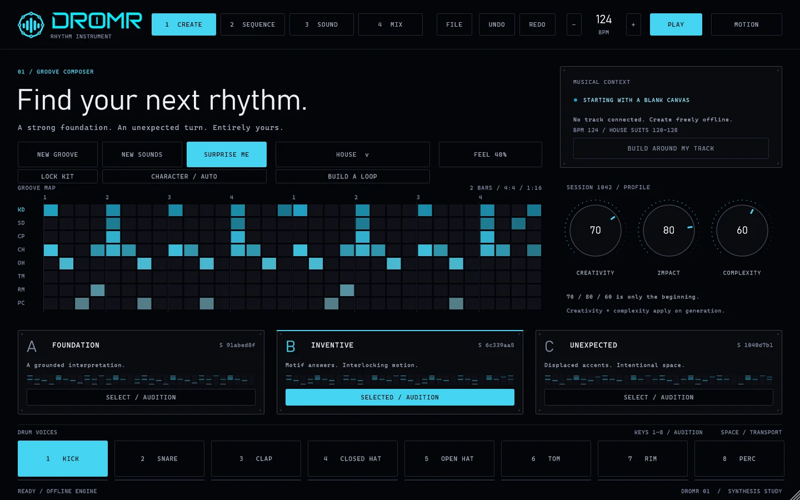
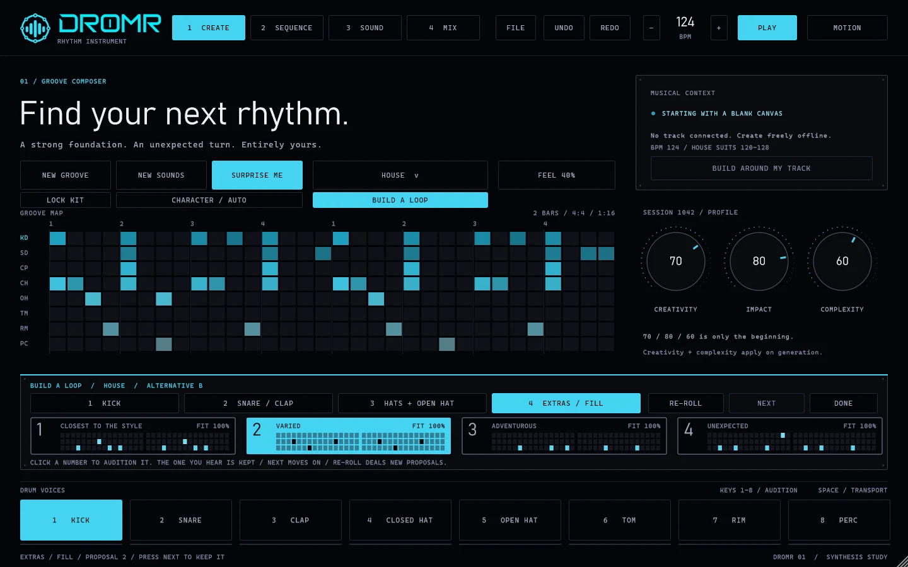
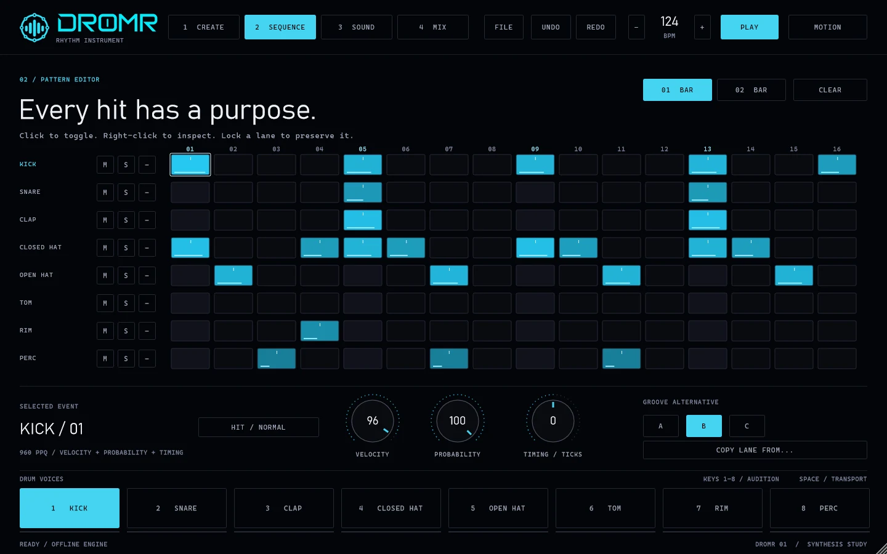
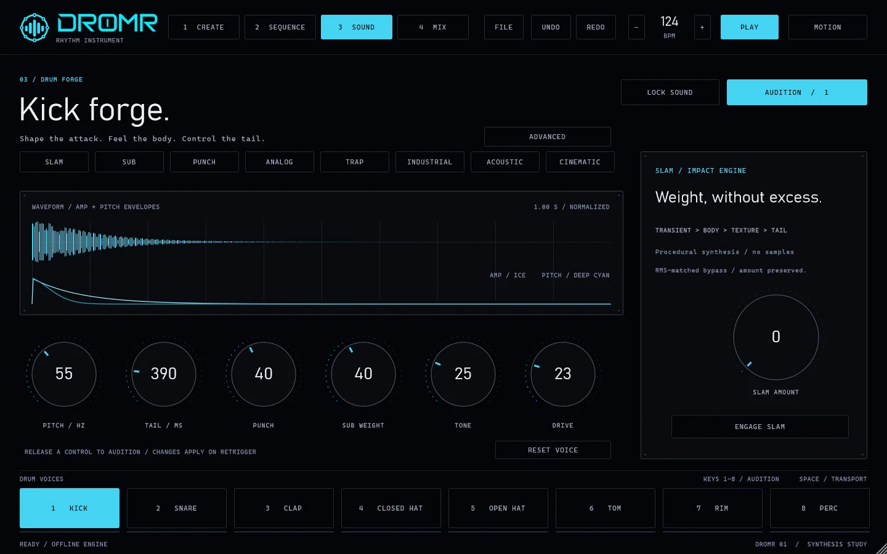
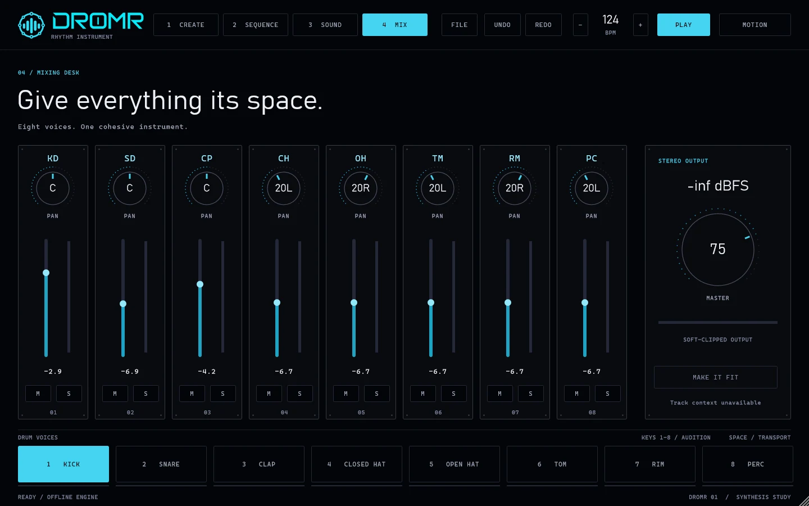

Rhythm instrument / VST3 / Standalone / Early preview
A drum instrument that builds grooves the way a drummer plays them: kick first, then a snare that fits it, then hats that answer, then the extras.

DROMR does not scatter hits and hope. Each lane is built from the lanes before it, using hand-written templates for each style.
Kick, then snare or clap fitted to it, then closed hat, open hat, and finally tom, rim and percussion. Each lane sees what is already there.
Boom bap, trap, indie rock, jazz, funk, house, UK garage, jungle, cinematic, experimental, ambient and acoustic pop, each with its own backbeat, swing and rests.
Press KICK, audition four proposals, keep one, then get a snare fitted to it. Hats and extras follow. Re-roll any stage without losing the earlier ones.
Bar 2 is a variation of bar 1: an anticipated kick, a changed ending, a ghost note or a short fill.
Lock any lane and it survives every generation, every re-roll and every style change.
Swing belongs to the style. FEEL adds only small timing and velocity drift. Every hit sits at its real 960-ticks-per-beat position.
Kick, snare, clap, closed and open hat, tom, rim and perc, with a kick forge and acoustic membrane models. Standard MIDI notes.
In a plugin host the tempo comes from the host, and DROMR shows which BPM range each style was written for.
CREATE finds the groove, SEQUENCE edits every hit, SOUND shapes the voices and MIX balances them. Screens are from the current preview build with the HOUSE style loaded.




This is a house groove produced by the generator (seed 1000): the kick on every beat, clap on two and four, and open hats on the "and" of the beat. Bar 1 and bar 2 are drawn side by side.
DROMR is in development. This build is unsigned and not yet finished; grooves are being tuned by ear. Feedback is welcome.
Download the early preview